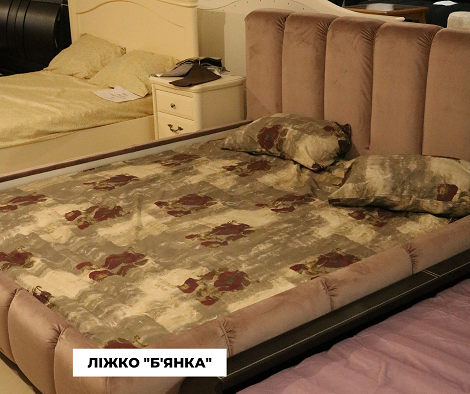
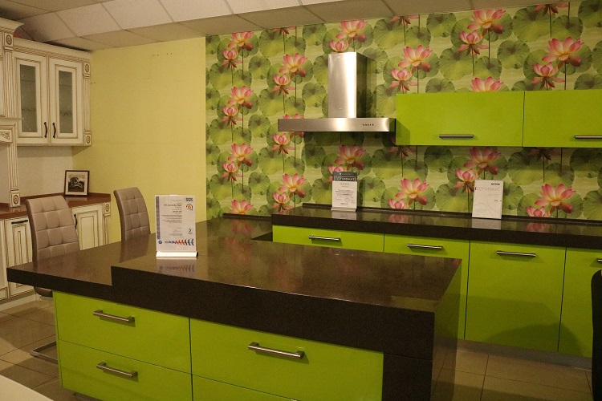
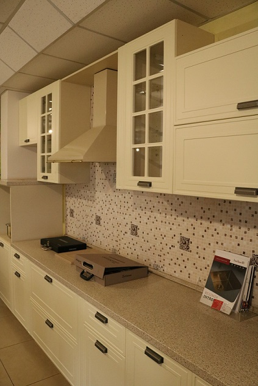

Від того, якими меблями обставлено житло, залежить його комфорт, затишок і функціональність.
Як вибрати
меблі для різних кімнат – в тексті

Як вибрати меблі для кухні
Перед тим як вибирати стиль або колір меблів для кухні, варто визначитися зі сценаріями використання кімнати.Подумайте, для чого буде використовуватись це приміщення частіше:
- готування їжі на всю сім'ю
- дружні вечори великою компанією
- романтичні вечері
Так, якщо ви не плануєте багато часу приділяти приготуванню їжі, думати про велику робочу зону і
багатофункціональність немає сенсу. А ось якщо у ваших планах збирати друзів, варто подбати про диванну зону і
особливий затишок на кухні.

Як вибрати колір кухні: практичні поради
У підборі меблів для кухні допоможе схема. Нанесіть на неї:
- Параметри приміщення
- Розташування комунікацій
- Для мийк
- Для варочної
- Під розетки
- особисті уподобання

Як правильно вибрати меблі для спальні
Спальня – місце, де ми проводимо третину життя, тому меблі необхідно підбирати досить ретельно. Головний предмет меблів у цій кімнаті – ліжко. Вибрати найкращий варіант вам допоможе невеликий чек-лист:
- Зробіть виміри кімнати, намалюйте схему або намітьте розміри ліжка. Так ви не зіткнетеся з тим, що ліжко займає надто багато місця або не стає між шафою та вікном.
- Переконайтеся в надійності ліжка. Для цього попросіть у продавця технічні документи, протестуйте за
можливості ламелі або підтримуючі конструкції.
- Протестуйте ергономіку ліжка. Наскільки з неї зручно вставати і лягати.
- Подбайте про те, щоб ліжко було в колірній палітрі вашої спальні.
- Насолоджуйтесь!
Далі у вас буде вибір,або надати перевагу приліжковому набору меблів в який входять тумбочки і столик/трюмо, або підібрати всі необхідні предмети меблів самостійно.